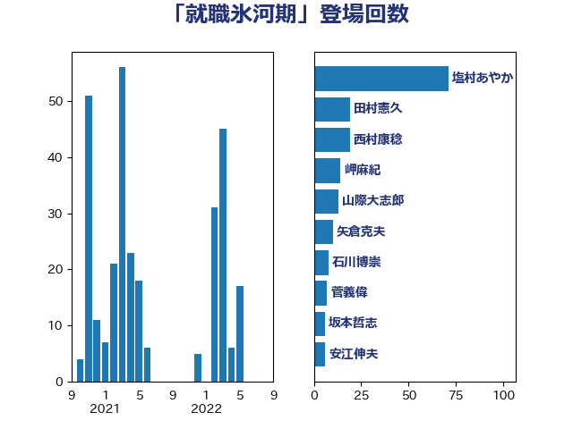

単語「就職氷河期」

| 塩村あやか | 立憲民主党 | 71 回 |
| 田村憲久 | 自由民主党 | 19 回 |
| 西村康稔 | 自由民主党 | 19 回 |
| 岬麻紀 | 日本維新の会 | 14 回 |
| 山際大志郎 | 自由民主党 | 13 回 |
| 矢倉克夫 | 公明党 | 10 回 |
| 石川博崇 | 公明党 | 8 回 |
| 菅義偉 | 自由民主党 | 7 回 |
| 坂本哲志 | 自由民主党 | 6 回 |
| 安江伸夫 | 公明党 | 6 回 |
| 吉川沙織 | 立憲民主党 | 5 回 |
| 吉良よし子 | 日本共産党 | 5 回 |
| 岸田文雄 | 自由民主党 | 5 回 |
| 藤田文武 | 日本維新の会 | 5 回 |
| 山本博司 | 公明党 | 4 回 |
| 片山大介 | 日本維新の会 | 4 回 |
| 佐々木さやか | 公明党 | 3 回 |
| 後藤茂之 | 自由民主党 | 3 回 |
| 櫻井周 | 立憲民主党 | 3 回 |
| 中野洋昌 | 公明党 | 2 回 |
| 古賀篤 | 自由民主党 | 2 回 |
| 渡辺創 | 立憲民主党 | 2 回 |
| 稲富修二 | 立憲民主党 | 2 回 |
| 金子恭之 | 自由民主党 | 2 回 |
| 麻生太郎 | 自由民主党 | 2 回 |
| 上田英俊 | 自由民主党 | 1 回 |
| 今枝宗一郎 | 自由民主党 | 1 回 |
| 伊佐進一 | 公明党 | 1 回 |
| 伊藤孝江 | 公明党 | 1 回 |
| 佐藤英道 | 公明党 | 1 回 |
| 勝部賢志 | 立憲民主党 | 1 回 |
| 古賀之士 | 立憲民主党 | 1 回 |
| 大塚耕平 | 国民民主党 | 1 回 |
| 山本香苗 | 公明党 | 1 回 |
| 山田勝彦 | 立憲民主党 | 1 回 |
| 本村伸子 | 日本共産党 | 1 回 |
| 杉久武 | 公明党 | 1 回 |
| 根本匠 | 自由民主党 | 1 回 |
| 森屋宏 | 自由民主党 | 1 回 |
| 河野太郎 | 自由民主党 | 1 回 |
| 泉健太 | 立憲民主党 | 1 回 |
| 田村智子 | 日本共産党 | 1 回 |
| 磯崎仁彦 | 自由民主党 | 1 回 |
| 福島みずほ | 社会民主党 | 1 回 |
| 秋野公造 | 公明党 | 1 回 |
| 竹谷とし子 | 公明党 | 1 回 |
| 菊田真紀子 | 立憲民主党 | 1 回 |
| 萩生田光一 | 自由民主党 | 1 回 |
| 鈴木俊一 | 自由民主党 | 1 回 |
| 階猛 | 立憲民主党 | 1 回 |